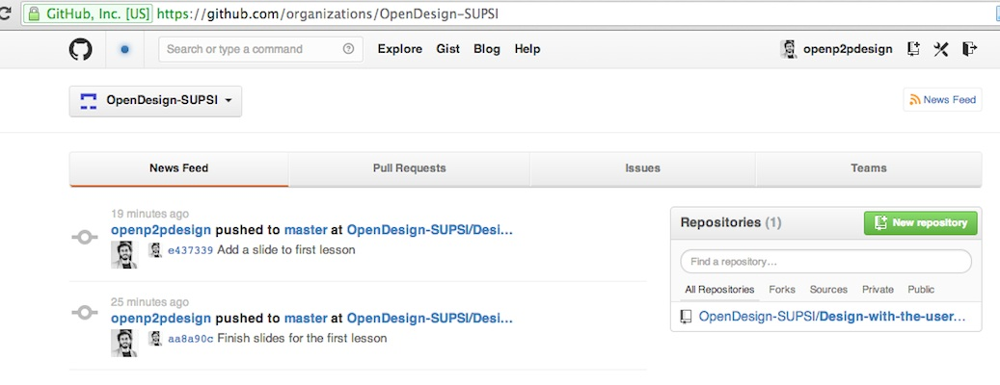
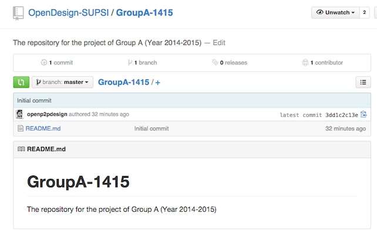
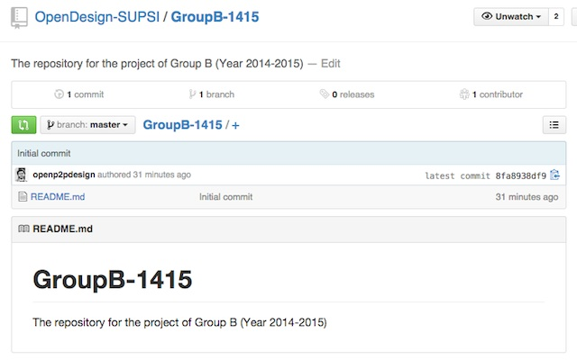

Design with the user
Massimo Menichinelli
2014-2015
Project
Source: on GitHub
Course structure
- 13/11: Course introduction. Slides
- 13/11: User-centered Design, User-experience design, Co-Design: methodologies and tools / Lead users, Open Innovation and Open Source. Slides
- 20/11: Open Design+Metadesign: concept and development / Intellectual property and design: laws and the design process. +Install Software Bring your computer! Slides
- 27/11: Digital Tools for Open projects: version control systems. Slides
- 4/12: Practice: developing an Open project Project @GitHub
- Christmas Holiday: Online work Project @GitHub
- 15/01: Practice: developing an Open project Project @GitHub
- 23/01: Practice: developing the physical Open project. Fabbing @ FabLab
How we will work together #01
- Two groups of 4 students: A and B
- Form the groups
- Send one e-mail per group to info@openp2pdesign.org with, for each member of the group:
- Name - Surname
- GitHub username (not the password!)
- e-mail address
How we will work together #03
- Choose a project:
- It can be from another course or already done
- ... but you need to be sure about your rights on an existing project
- The importance is on testing the process of working together in a distributed way, not on the complexity of the project
- Test/design hardware, software, design, ...
- Simple/small enough for fabbing it on the last day
How we will work together #04
- Use the group repository for files
- Use the group repository issues for discussion
- Add the licenses (for hardware, software, design, ...) as files + README.md
Where we will work together: Organization
Where we will work together: Group A
Where we will work together: Group B
Contacts
Massimo Menichinelli / info@openp2pdesign.org / @openp2pdesign

This work is licensed under a Creative Commons Attribution 3.0 Unported License.
Massimo Menichinelli 2014-2015
openp2pdesign.org